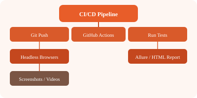

QAOps integrates testing into the DevOps pipeline. Tests run on every commit, results are visible in the CI dashboard, and failures block deployments.
# Deploy Playwright report to Azure Static Web Apps
# .github/workflows/deploy-report.yml
name: Deploy Report
on:
workflow_run:
workflows: ["Playwright Tests"]
types: [completed]
jobs:
deploy:
runs-on: ubuntu-latest
steps:
- uses: actions/download-artifact@v4
with: { name: playwright-report }
- name: Deploy to Azure
uses: Azure/static-web-apps-deploy@v1
with:
azure_static_web_apps_api_token: ${{ secrets.AZURE_TOKEN }}
repo_token: ${{ secrets.GITHUB_TOKEN }}
action: upload
app_location: playwright-report# .github/workflows/ci.yml
name: CI Pipeline
on:
push:
branches: [main, develop]
pull_request:
branches: [main]
jobs:
lint:
runs-on: ubuntu-latest
steps:
- uses: actions/checkout@v4
- uses: actions/setup-node@v4
with: { node-version: 20 }
- run: npm ci
- run: npx eslint .
test:
needs: lint
runs-on: ubuntu-latest
strategy:
matrix:
project: [chromium, firefox, webkit]
steps:
- uses: actions/checkout@v4
- uses: actions/setup-node@v4
with: { node-version: 20 }
- run: npm ci
- run: npx playwright install --with-deps
- run: npx playwright test --project=${{ matrix.project }}
- uses: actions/upload-artifact@v4
if: always()
with:
name: report-${{ matrix.project }}
path: playwright-report/
deploy:
needs: test
runs-on: ubuntu-latest
steps:
- run: echo "Deploying to production..."# Dockerfile
FROM mcr.microsoft.com/playwright:v1.48-jammy
WORKDIR /app
COPY package.json package-lock.json ./
RUN npm ci
COPY . .
CMD ["npx", "playwright", "test"]